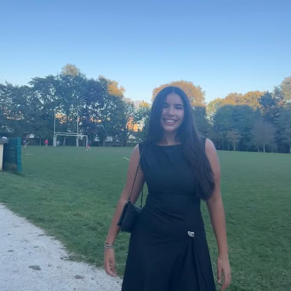

I'm a student at HEC Paris with a passion for fashion, music and creativity. I love exploring new ideas, taking on exciting projects and finding inspiration at the intersection of business and art.
Discover HEC ParisFashion is not only about finding my personal style, but it has also become a key professionnal interest for me. I love discovering new designers, exploring luxury universes and turning ideas into visual, meaningful projects.
Music has always been a big part of my life. I love singing, performing on stage and using music as a way to express emotion, energy and personality.
I’m fascinated by brands, strategy and innovation. I enjoy understanding how great companies build strong identities and memorable experiences — and I’m now learning how to code too.